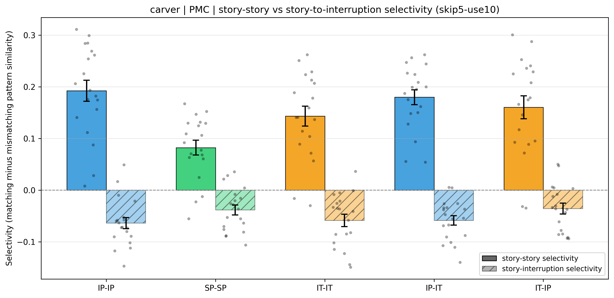

We tested whether the story-to-interruption inversion in posterior medial cortex (PMC) is epoch-specific: whether a participant's story-window pattern is more strongly anti-correlated with the comparison group's interruption-window pattern at the same epoch than at any other epoch. For every interruption epoch we built two 10-TR template patterns in PMC: a story window ending one TR before interruption onset, and an interruption window starting five TRs after onset (the first five post-onset TRs were discarded to avoid hemodynamic carry-over from the preceding story segment). Inter-subject pattern correlation (ISPC) at every ordered pair of epochs (i, j) was a single Pearson correlation between one participant's window template at epoch i and the across-participant average of the comparison group's window template at epoch j. Two pattern-similarity families were computed: the story-story family used the story window on both sides, while the story-interruption family used the participant's story window and the comparison group's interruption window. Each family was evaluated under five inter-subject schemes: three within-condition, in which each participant was compared with the average pattern of the other participants in the same condition (intact-pause, IP-IP; scrambled-pause, SP-SP; intact-theory-of-mind, IT-IT), and two across-condition, in which each participant in one condition was compared with the across-participant average of the other condition's group (IP-IT and IT-IP). PMC voxels were defined by the project's anatomical PMC mask and per-voxel timecourses were z-scored across the entire run before analysis.
For each participant the ISPC values at i = j formed the matching set, and the ISPC values at i ≠ j formed the mismatching set; participant selectivity was mean(matching) − mean(mismatching), and group selectivity was the across-participants mean. The two families have opposite directional predictions: story-story selectivity should exceed zero (matching positive and larger than mismatching), and story-interruption selectivity should fall below zero (matching more negative than mismatching, the inversion). To test whether each family's group selectivity exceeds chance in its expected direction we reshuffled each participant's matching-versus-mismatching labels: the matching and mismatching ISPC values were pooled and randomly re-assigned to sets of the original sizes, participant selectivity was recomputed, and the group mean was recorded; 10000 iterations built the null. The one-tailed permutation p is (k + 1)/(10000 + 1), where k is the number of null group selectivities at-or-above the observed value for story-story, and at-or-below it for story-interruption. The table also reports the standard error of the group selectivity, a bootstrap 95% confidence interval (10000 iter, resampling participants), a descriptive paired t-test on subject (matching − mismatching) values, and Cohen's dz; the legend under the table defines each column.
Primary stats (unshaded) | Descriptive / context (light gray)
| Family | Cond | Selectivity | SE | 95% CI | p (perm) | n | Mean matching r | SEmatch | Mean mismatching r | SEmismatch | t | df | dz |
|---|---|---|---|---|---|---|---|---|---|---|---|---|---|
| story-story | IP-IP | 0.1924 | 0.0203 | [0.1523, 0.2296] | 1.00e-04 | 19 | 0.2992 | 0.0258 | 0.1068 | 0.0105 | 9.469 | 18 | 2.172 |
| story-story | SP-SP | 0.0824 | 0.0143 | [0.0540, 0.1084] | 1.00e-04 | 19 | 0.2098 | 0.0268 | 0.1273 | 0.0181 | 5.771 | 18 | 1.324 |
| story-story | IT-IT | 0.1433 | 0.0191 | [0.1059, 0.1784] | 1.00e-04 | 19 | 0.2373 | 0.0261 | 0.0939 | 0.0123 | 7.486 | 18 | 1.717 |
| story-story | IP-IT | 0.1800 | 0.0144 | [0.1519, 0.2065] | 1.00e-04 | 19 | 0.2674 | 0.0175 | 0.0874 | 0.0090 | 12.505 | 18 | 2.869 |
| story-story | IT-IP | 0.1604 | 0.0221 | [0.1171, 0.2008] | 1.00e-04 | 19 | 0.2359 | 0.0300 | 0.0755 | 0.0133 | 7.253 | 18 | 1.664 |
| story-interruption | IP-IP | -0.0637 | 0.0107 | [-0.0834, -0.0420] | 0.0012 | 19 | -0.2209 | 0.0211 | -0.1572 | 0.0142 | -5.928 | 18 | -1.360 |
| story-interruption | SP-SP | -0.0382 | 0.0097 | [-0.0567, -0.0195] | 0.0245 | 19 | -0.1894 | 0.0239 | -0.1511 | 0.0200 | -3.931 | 18 | -0.902 |
| story-interruption | IT-IT | -0.0585 | 0.0120 | [-0.0817, -0.0361] | 0.0013 | 19 | -0.1552 | 0.0178 | -0.0967 | 0.0123 | -4.895 | 18 | -1.123 |
| story-interruption | IP-IT | -0.0586 | 0.0091 | [-0.0760, -0.0414] | 7.00e-04 | 19 | -0.1249 | 0.0136 | -0.0662 | 0.0064 | -6.473 | 18 | -1.485 |
| story-interruption | IT-IP | -0.0356 | 0.0105 | [-0.0549, -0.0151] | 0.0526 | 19 | -0.1459 | 0.0250 | -0.1104 | 0.0186 | -3.385 | 18 | -0.776 |

Bars: group-mean selectivity (matching − mismatching r). Whiskers: ±SE across participants. Solid bars = story-story family; hatched = story-interruption (inversion) family. Dots: subject selectivity values. Condition codes: intact-pause within group (IP-IP), scrambled-pause within group (SP-SP), intact-theory-of-mind within group (IT-IT), each intact-pause participant versus the intact-theory-of-mind group mean (IP-IT), each intact-theory-of-mind participant versus the intact-pause group mean (IT-IP).